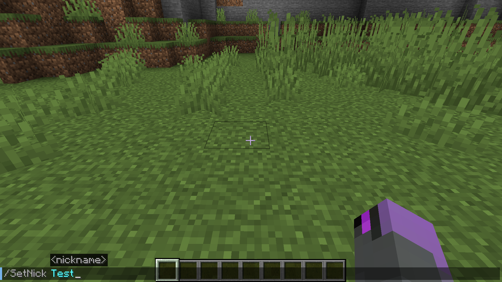
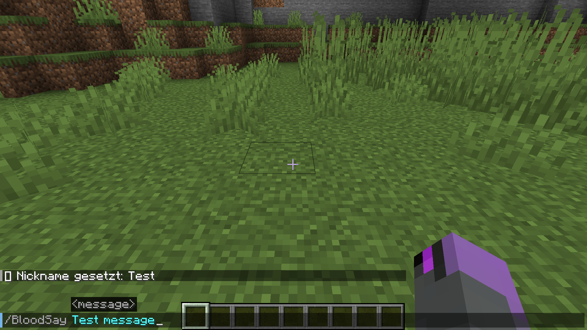
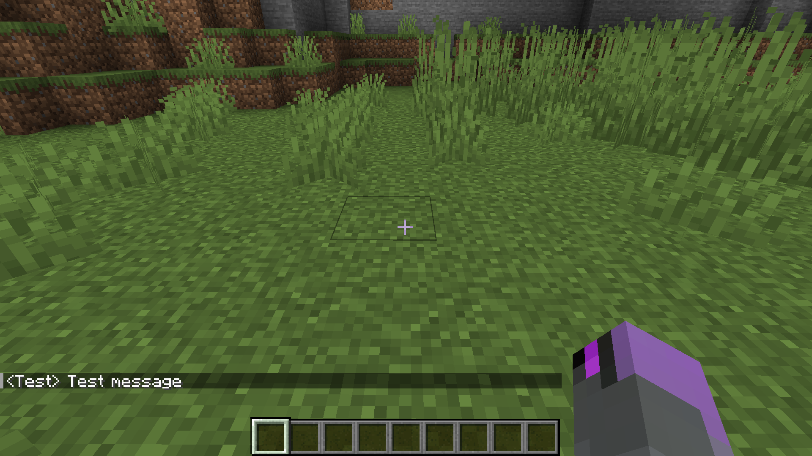
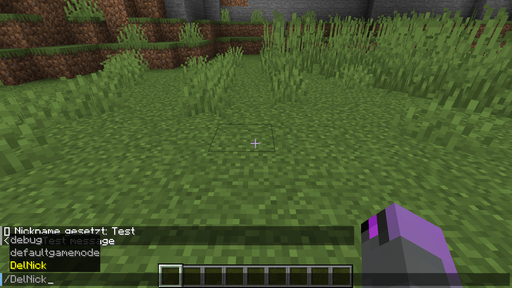
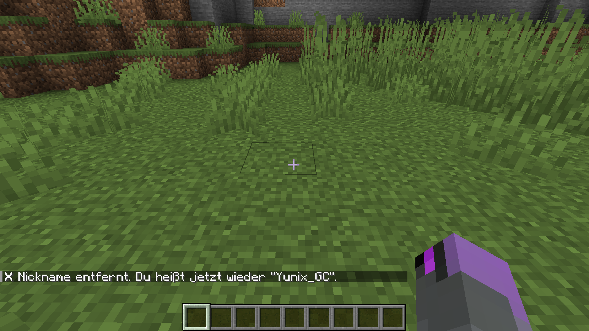

🔥 Features
/SetNick <name>– Setzt deinen Nickname/DelNick– Entfernt deinen Nickname/BloodSay <msg>– Chat mit Nickname- Join- & Death-Messages mit Nickname
- Nicknames werden gespeichert & automatisch geladen
🧬 Virus-System
In der Welt von BloodBound lauert ein mysteriöser Erreger – verborgen in infizierten Gesteinen.
- 🔹 Infizierte Blöcke – sehen harmlos aus, sind aber gefährlich
- 🧂 Virus Dust – entsteht beim Abbau
- 🧪 Reagenzglas – craftbar aus Glas
- 🧬 Virus im Glas – kombinierbar für Rituale, Forschung oder Infektion
📸 Screenshots
    📥 Download
Letzte Version: v0.0.2
Download auf GitHub❓ FAQ
Welche Minecraft-Version? 1.19.2 mit Fabric
Benötigt die Mod Mixins? Nein – komplett ohne Mixins!
📜 Lizenz
BloodBound ist unter der MIT-Lizenz veröffentlicht. Du darfst sie frei nutzen, modifizieren und teilen.